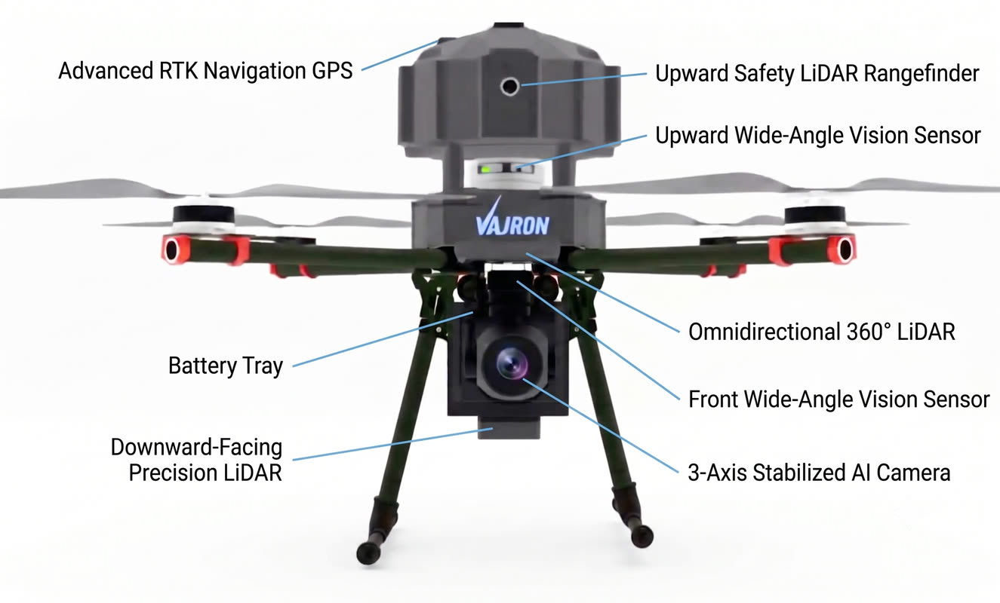
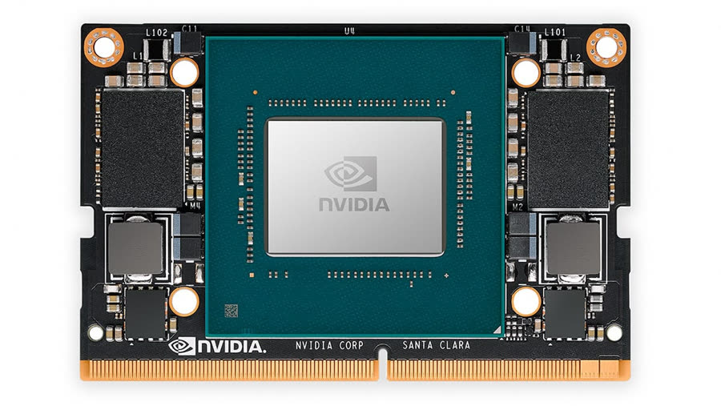
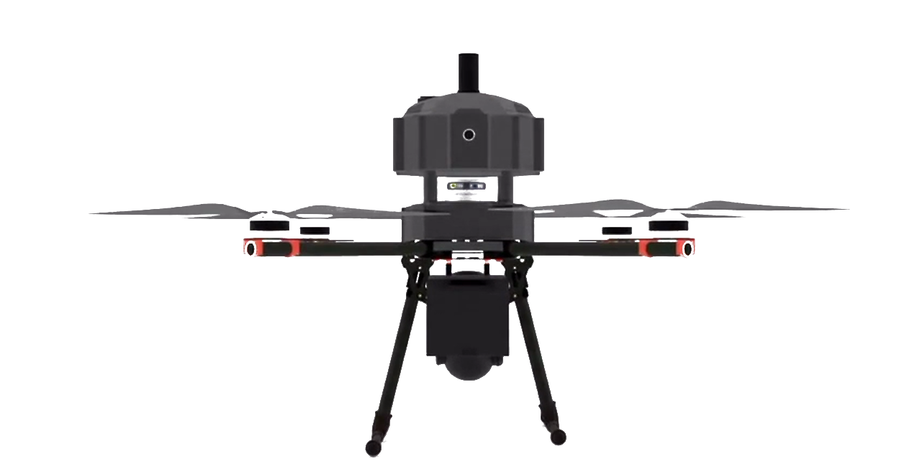

Seven perception systems on one carbon fibre airframe, with the analysis running on the aircraft rather than on the ground.
30xOptical zoom
360°LiDAR coverage
15mDetection radius
500HzOverhead sampling
It does not just record. It understands, in the air.
Conventional aircraft capture footage for someone to review later. This one carries an NVIDIA Jetson module and runs the model in flight, so what comes back is a result rather than raw material.
Perception suite
Seven systems, one airframe
Each answers one question. What is that. How far away. What is overhead. What is underneath. Where am I, to the centimetre.
General arrangement
The same seven, on the aircraft itself

Component arrangement, front elevation
The processing is onboard
An NVIDIA Jetson module runs live video analytics on the aircraft. Ground-only processing depends on a continuous video link, and if that link degrades the feed arrives late and the recording can be lost. Running the model in flight removes the dependency.
The same processor fuses LiDAR and camera data for obstacle avoidance, so perception and analysis share one brain. A Linux-based 4G SIM dongle streams results while the aircraft is still flying.
Trained on 100,000+ images
95%+ monitoring accuracy

What it is, and how far away
The camera identifies the object. The LiDAR measures the distance. Fusing the two turns a picture into a map of the flight path. Safety buffers widen dynamically around moving people and vehicles, and stay tight around static walls.
YOLO vision with 2D LiDAR
Dynamic safety zones
Automated pathfinding
Select the mission. Step back.
Pre-flight verification, take-off, mission execution and return, without pilot input. Weather awareness and risk evaluation run continuously, not only before launch.
01
Pre-flight verify
Full health, calibration, battery and environment check before anything spins.
02
Safe take-off
Overhead clearance confirmed, gear retracted, camera view unobstructed.
03
Obstacle-aware flight
Terrain-aware navigation along a repeatable, centimetre-held path.
04
Autonomous return
Smart return-to-launch triggers on low battery or changing conditions.
What it refuses to do
Much of the safety case is not what the aircraft does. It is what it declines to do, automatically, before anyone can override it.
Denied
Rain flight is never permitted
Two independent layers decide. The 4G dongle checks the forecast before take-off, and rain or rising humidity in the mission window raises a warning on the ground station. Any live rain detection denies take-off outright. Onboard temperature and humidity sensors verify conditions independently if network weather data is unavailable.
Locked
The take-off lock
Thin wires and low branches are what a ground operator misses. Top-mounted LiDAR and camera scan 40 m of airspace above the aircraft before it leaves the pad. If an obstacle sits in the clearance zone, take-off is blocked. If take-off is forced anyway, the navigation system intervenes and calculates an angled trajectory to ascend around it.
Blocked
Unsafe launch sites
Launch is refused outright where the site itself is unsuitable, before calibration or battery state come into question.

Carbon fibre, redundant, quick to turn around
A modular frame with redundant avionics. The landing gear folds up after take-off and deploys before landing, keeping the legs out of frame for a clear 360° line of sight, cutting drag in forward flight and improving range and stability.
The power pack sits inside the structure rather than strapped to it, in an IP54 enclosure with cell balancing and live voltage telemetry. A full swap takes under two minutes, so the aircraft turns around in the field.
Retractable gear
IP54 tray
Under 2 min swap
Specification
Every figure on this page, on one screen.
System
Function
Figure
3-Axis Stabilized AI Camera
Primary visual perception. 4K sensor on an active gimbal with real-time target lock.
30x zoom
Omnidirectional LiDAR
Continuous full horizontal scanning, unaffected by lighting, glare or night operations.